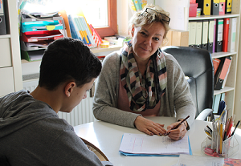
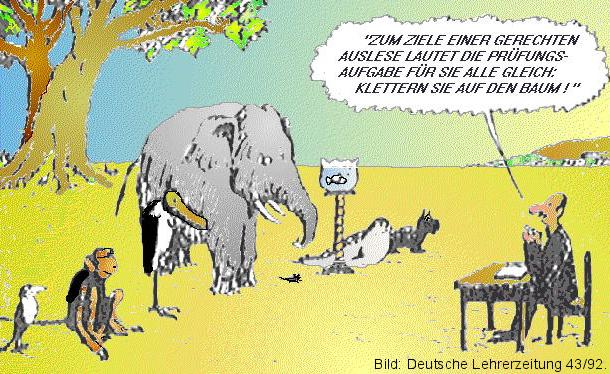

Zu meiner Person

Mein Name ist Birgit Reimann-Groll. Ich bin verheiratet und habe 2 Kinder. Seit
2003 arbeite ich mit großer Freude in meiner Praxis. Die Arbeit
mit Kindern hat mir schon immer viel Freude gemacht.
Mein
Pädagogisches Grundprinzip heißt:
Ideal wäre es, wenn jedes
Kind das "Seine" und nicht das gleiche wie alle bekäme ...
(Pestalozzi)
Studium
Freiburg 1. Staatsexamen für die Grund- und Hauptschule, mit dem
Hauptfach der Mathematik und dem Sachunterricht
Aufbaustudium der Sonderpädagogik
Schwerpunkt der Geistig- und Sehbehinderten
Nach meinem Studium
habe ich als Erzieherin beim Deutschen Kinderschutzbund in der
Kernzeitbetreuung an beiden Wieslocher Grundschulen gearbeitet.
Zusatzausbildungen
Ausbildung zur Dyskalkulietherapeutin im Rechentherapiezentrum in
Hirschberg.
Seminare
Seminar für Lese- und Rechtschreibschwäche (Wiesloch 2004)
Entdeckungen im Zahlenland von Prof. Preiß - mathematische Bildung im Kindergarten (Heilbronn 2006)
Individuelle Förderung bei LRS, 4. -7. Schuljahr Basistrainig (Mannheim 2008)
Fachliche Leitung des Projektes "Zahlenfüchse" der Bürgerstiftung Wiesloch (seit 2010 bis heute)
Fit im Rechtschreiben mit FRESCH (Freiburg 2011)
